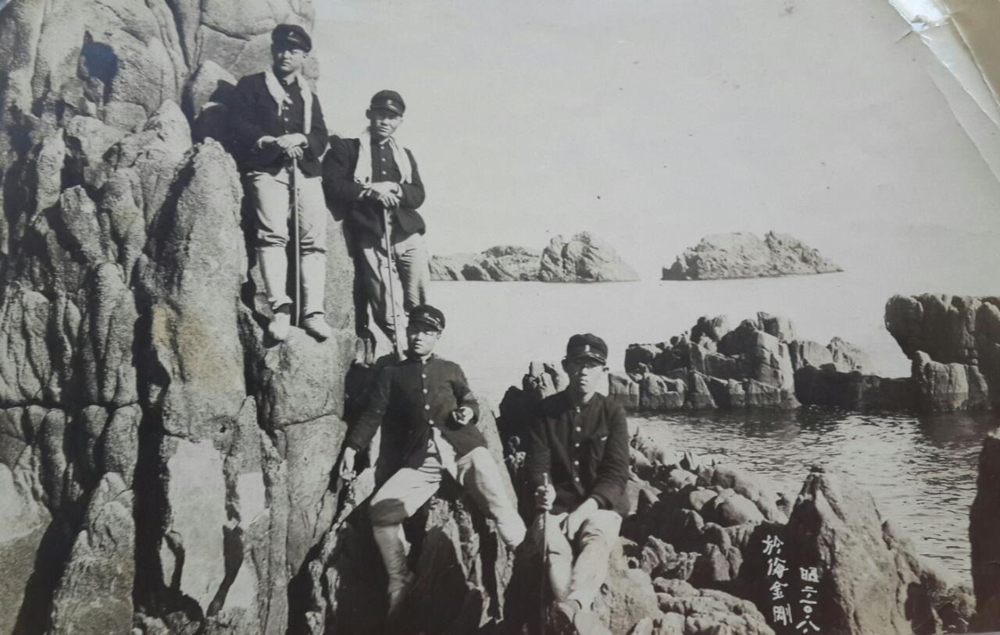

Lee Sang-rae — The Grandson Whose Name Appears on Gwangmyeong
The Lee Dong-beom Family of Hampyeong: A 128-Year Bond | Part 7
[EN] English edition · Translated from the Korean original · 한국어 원문
In Part 6, I followed the records of the eldest son who carried on the head family, my great-grandfather Chun-gang Lee Jae-seung. This time I introduce his eldest son, my grandfather Lee Sang-rae (李祥來, 1909–1970).
In Part 3, I introduced the two characters 祥來 written on the right of the Gwangmyeong (光明) calligraphy. I would like to trace, one by one, what kind of times the bearer of that name lived through, using objects left in the family and family records.
1. Eldest Grandson of the Head Family
Lee Sang-rae was born as Lee Jae-seung's eldest son. He was the eldest grandson of Seok-am Lee Dong-beom, and he is my grandfather. He was born eleven years after Kim Gu visited Jinsa Lee's house.
The Jungdong School graduation certificate kept in our family records his date of birth as "the 8th day of the 1st month of the 42nd year of Meiji," that is, January 8, 1909. Lee Sang-rae, grandson of Seok-am Lee Dong-beom and eldest son of Chun-gang Lee Jae-seung, belongs to the seventh generation of the direct line beginning with Lee Bung-seo as confirmed in the Hampyeong Lee Clan Comprehensive Genealogy.
2. Jungdong School in Seoul

Lee Sang-rae left Hampyeong to study at Jungdong School in Seoul. The graduation certificate attests that he completed all courses of the regular program on March 5 of the 5th year of Showa (1930), and at the end bears the name of the principal at the time, Choe Gyu-dong (崔奎東).
A photograph from his school days has also been handed down in the family. Four students in school uniforms stand and sit on rocks by the sea, and in the corner of the photograph remain the words 於海金剛 ("at Haegeumgang") and a date tentatively read as the 2nd year of Showa (1927).

We have not yet been able to confirm which of the four people in the photograph is my grandfather. The written date also needs an accurate reading, so for now I record only that it is handed down as a travel photograph from around the time he attended Jungdong School.
3. Rice in the Barn at the End of the Colonial Period
The record that conveys my grandfather's youth most vividly is, unexpectedly, a memoir: The Woman Who Wanted to Be Hwang Jini (황진이가 되고 싶었던 여인), published in 2001 by his younger sister, Lee Hak (李鶴).
The chapter "The Dark Age" (암흑시대) in this book contains a family story related to the forced grain requisitions at the end of the Japanese colonial period. The memoir places this period in "the early 1940s," but the exact year in which the incident occurred has not yet been confirmed.
At a time when demands came down to hand over even the grain collected as tenant rent, the family hid rice for its own meals in a barn. When this was discovered, Lee Hak recalls, her eldest brother Lee Sang-rae was taken to the police station on the grounds of having hidden food. It is also said that the younger sister, who could speak Japanese, went to the police station on behalf of the family.
Contrary to the police chief's word that he would soon be sent home, the book writes that my grandfather was "released after being harassed for two weeks." It also tells how his mother would not let a fire be lit in her room, saying she could not sleep somewhere warm while her son lay on a cold floor.
The book portrays my grandfather as a man devoted to classical Chinese learning — richly learned, but reserved and of few words. According to the book, after this incident he became even more taciturn, and not long afterward, taking only as much food as he could carry, he went into Bulgapsa Temple in Yeonggwang and lived in seclusion for a while.
This story, however, is a record left as a family recollection. The exact date he was taken in and the disposition he received at the police station have not yet been confirmed in official documents of the time; we plan to compare them with local records on grain requisitions and police in Hampyeong.
4. 1947: The Name 祥來
In 1946, the year after liberation, the people who went to see Kim Gu in Seoul were Lee Sang-rae's father and uncle. In the reunion passage of Baekbeom Ilji, too, only the names of the two brothers Lee Jae-seung and Lee Jae-hyeok appear.

Yet on the Gwangmyeong calligraphy bearing an inscription dated June 23, 1947, a year later, the grandson's name 祥來 is written. For our family, this calligraphy is a precious object showing that the bond between Kim Gu and the Lee Dong-beom family from 1898 was passed down to the grandson's generation.
The writing and inscription of the calligraphy were introduced in detail in Part 3. When, where, and under what circumstances my grandfather received this calligraphy has not yet been confirmed, and we plan to look further into the records remaining in the family.
5. Remaining Questions
Lee Sang-rae passed away in 1970. The years of birth and death in this piece are based on the family register transcript; the family has remembered it as 1969 by the lunar calendar, so there is a discrepancy between the two records.
Putting this together also made clear the questions still to be confirmed: the year and disposition of the grain requisition incident and his detention by the police, the reading of the date and identification of the people in the Haegeumgang photograph, the circumstances in which he received the Gwangmyeong calligraphy, and his activities in the 1930s after graduating from Jungdong School.
Family memory is a precious starting point, but the principle of this series is to follow it as far as the records allow.
In the next part, I will introduce Lee Sang-rae's wife, my grandmother Shin Mun-ran, who kept the inner quarters of the head family house.
Official interview, Kim Koo Museum & Library [Korean]
https://www.youtube.com/watch?v=NZlIOjAmNzg
See also
- Full archive (English): https://lsaru23-ai.github.io/hp-db-archive/en/
- Full archive (Korean): https://lsaru23-ai.github.io/hp-db-archive/
- X @hp_db_archive https://x.com/hp_db_archive
- Threads @hp_db_archive https://www.threads.com/@hp_db_archive
Previous
- Part 1: Who Was "Jinsa Lee"? — Kim Gu and the Lee Dong-beom Family of Hampyeong https://lsaru23-ai.github.io/hp-db-archive/en/post1.html
- Part 2: Why He Stayed Two Weeks — Hiding in Hampyeong, 1898 https://lsaru23-ai.github.io/hp-db-archive/en/post2.html
- Part 3: The 1946 Reunion and Gwangmyeong — A Bond Kim Gu Sought Out Again https://lsaru23-ai.github.io/hp-db-archive/en/post3.html
- Part 4: The Head Family House and the Lee Jae-hyeok House — 128 Years in Two Homes https://lsaru23-ai.github.io/hp-db-archive/en/post4.html
- Part 5: Seok-am Lee Dong-beom — The Life of "Jinsa Lee" https://lsaru23-ai.github.io/hp-db-archive/en/post5.html
- Part 6: Chun-gang Lee Jae-seung — The Eldest Son Who Carried On the Head Family https://lsaru23-ai.github.io/hp-db-archive/en/post6.html
Main references
[1] Jungdong School graduation certificate (5th year of Showa; March 5, 1930), family collection.
[2] Commemorative photograph at Haegeumgang (written date tentatively read as the 2nd year of Showa, 1927), family collection.
[3] Lee Hak (李鶴), The Woman Who Wanted to Be Hwang Jini (황진이가 되고 싶었던 여인), Beomusa, 2001, pp. 90–91 ("The Dark Age"). [Korean]
[4] The original Gwangmyeong calligraphy held by the Lee Dong-beom family (inscription: "the 23rd day of the 6th month of the 29th year of the Republic of Korea").
[5] Kim Gu, Baekbeom Ilji, pp. 336–337.
[6] Family register transcript and Hampyeong Lee Clan Comprehensive Genealogy.
This piece distinguishes facts confirmed directly in documents and objects, family recollections, and family tradition. The content of the memoir has been summarized by the author and will be supplemented according to additional sources.
This English edition is a translation of the Korean historical archive. The Korean original remains the authoritative version. Documentary evidence, family recollections, and unresolved questions are distinguished throughout.
Chinese characters given in parentheses after names and source titles are supplied for identification; they are not quotations from the original documents unless shown in quotation marks.